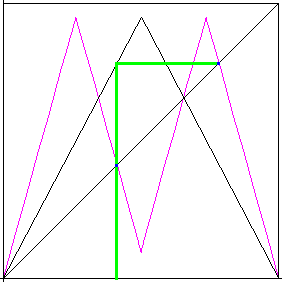

| How can we locate the points belonging to an n-cycle? |
| For example, consider the 2-cycle consisting of the points x = a
and x = b. |
| From the graph it is easy to see T(a) = b and T(b) = a.
Consequently, |
| T(T(a)) = T(b) = a | and | T(T(b)) = T(a) = b |
| That is, | |
| T2(a) = a | and | T2(b) = b |
|
| In other words, if x = a and x = b belong to a 2-cycle
for T(x), both are fixed points for T2(x) = T(T(x)). |
| This is useful, because we know how to locate graphically the fixed points of any function: look
for the intersections of the graph of T2(x) (purple below) with the diagonal. |
|  |
| Click the animation to stop. |
| Note the fixed points of T(x) also are fixed points of T2(x). |
| This is hardly a surprise: |
| if T(c) = c, then T2(c) = T(T(c)) = T(c) = c. |
| This observation has obvious generalizations. For example,
the points of a 4-cycle of T(x) are fixed points of T4(x). But the fixed points of
T4(x) include also fixed points of T(x) and the points of 2-cycles
of T(x). |
| Do you see the general pattern? |